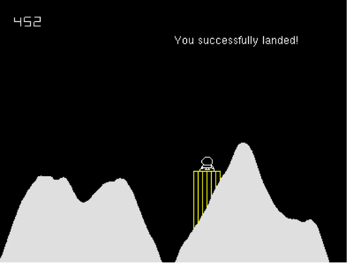

CS 241 Project - Moon Lander
Overview
Lunar Lander was one of many influential early video games released by Atari in 1979, and was a precursor to their release of Asteroids (which we will also implement this semester). The object of the game is to safely navigate a lunar module to land on a flat portion of the moon's surface. To pilot the lander, horizontal thrusters can be activated to maneuver the ship left and right, and vertical thrusters can be fired to slow its descent.
Instructions
First, you need to set up your environment for OpenGL projects. See this link for information about your different options and instructions to set up each one.
Then, your assignment is to create a Moon Lander game that is a based on this classic arcade game. In the game, a random ground configuration is drawn, with a single safe landing platform. The lander begins at a random location along the top of the screen and begins falling according to gravity. The user can fire left, right, and bottom thrusters to guide the craft safely to the landing platform before the fuel is exhausted. The lander will crash if it touches the ground or approaches the platform with too much speed.
Architectural Design
The entire program will need to be implemented using the principles of encapsulation. Thus, you need to think about the different components (classes) that you will need in the game, and their various actions (methods) and properties (member variables). Before you start programing, you will need to produce UML class diagrams for each of the classes you will be using. Please pay special attention to the design of these components, so they can be as general-purpose as possible. You will want to reuse some of them in future projects.
To assist you in your project, you will be given an implementation of a Point class that stores an x and y coordinate, and a Ground class that generates random terrain (including the landing platform), and has methods to identify the location of the platform (getPlatformPosition()), the elevation of an object above the ground (getGround(Point)), and if a point is above ground (not crashed) (isAboveGround(Point)). The following UML defines these classes:
Game Play and Rules
The following describes the rules and game play of Moon Lander:
- The dimensions of the screen are: (-200, -200) to (200, 200).
- The lander begins with 500 units of fuel.
- To land successfully, the lander must:
- have its center within the horizontal boundaries of the platform.
- be within 4 pixels vertically, above the platform.
- arrive at the platform with a velocity of no more than 3 pixels per frame in any direction.
- Gravity on the moon can be modeled as 0.1 pixels per frame.
- The left arrow key causes thrust on the left of the lander which propels it to the right (and similar for the right and down arrows).
- The left and right thrust amounts are 0.1 pixels per frame, and consume 1 unit of fuel.
- The upward thrust (caused by the down arrow) amount is 0.3 pixels per frame, and consumes 3 units of fuel.
- The lander should have inertia, in other words, once it begins moving left, it should continue moving left unless additional thrust is made.
- The lander should not continue to move after crashing or landing.
- After successfully landing, the game should display, "You have successfully landed!"
- After crashing, the game should display, "You have crashed."
- After running out of fuel, the lander should not be able to apply thrusters (but can continue falling).
- Any other contact with the ground or platform results in a crash.
Error Handling
As usual, your classes and the game itself will need to be robust to any type of user or file input. Extensive error handling should also be built into each class to ensure that clients of the class will use them correctly. Similarly, there should be no way the user can cause the program to malfunction due to incorrectly formed input.
Using the Provided Files
The graphics and game play will be done with OpenGL. A simplified interface to this library is provided.
Essentially there are two sets of files, those that handle the details of the graphics and drawing, and those that relate to the Moon Lander part of the game. You are welcome to look through the first set of files, but you will likely not need to change anything there.
Set 1 - The Graphics interface
The part of graphics interface files that is important for you to know, is that they provides the following functions:
-
drawLander(Point p)- Draws a lander (i.e., ship) at the provided point.
-
drawLanderFlames(Point p, bool bottom, bool left, bool right)- Draws the flames for the lander at any direction set to true.
-
drawText(Point p, const char * text)- Puts the provided text on the screen at point p.
-
drawNumber(Point p, unsigned int number)- Puts the provided number on the screen at point p.
The files that compose this interface to the library are: (again, you should not need to worry about the details of them)
/home/cs241/moonLander/uiInteract.h-- Header file describing the OpenGL interface/home/cs241/moonLander/uiInteract.cpp-- Source for uiInteract.h. Should not change/home/cs241/moonLander/uiDraw.h-- Header file with drawing function prototypes/home/cs241/moonLander/uiDraw.cpp-- All the drawing functions./home/cs241/moonLander/point.h-- Ultra simple class describing a single point/home/cs241/moonLander/point.cpp-- Implementation of the Point class
Set 2 - Files Relating to Moon Lander
The next set of files relate directly to the Moon Lander. First, we have a makefile and a Ground class.
The makefile contains rules to build compile all of the files provided, but YOU WILL NEED TO UPDATE IT to compile any new files / classes you create.
/home/cs241/moonLander/makefile-- Instructions to build the game
The Ground class is used to draw the terrain of the world and the platform. It also contains methods that allow you to know how close a point is to the ground, etc.
/home/cs241/moonLander/ground.h-- Header file for the Ground/home/cs241/moonLander/ground.cpp-- Implementation for the Ground class
The Place to Start
Finally, you are provided with a file, game.cpp that is the driver for the program.
/home/cs241/moonLander/game.cpp-- Driver program shell for your project (start with this, but it will need to be finished).
It starts up the game, and the continually loops through the following functions:
advance- Any "moving" of objects should be done here.handleInput- Check for user input and take the corresponding actions.draw- Call draw on every object that should be on the screen.
Getting the Files
All of the above mentioned files are found in the directory:
/home/cs241/moonLander/*
You will need to copy them to your own directory in whatever environment you choose.
Examples
uiTest
A very simple OpenGL project is provided for you to observe and play with. It shows a shape in the middle of the screen and responds to arrows and the space bar. This is a great project to start with to make sure your environment is set up correctly, and then look at the code to observe the basic interactions. The project is found at:
/home/cs241/uiTest/*
Pong
Another working example is Pong. This example demonstrates handling user interaction and moving the ball. The source code for Pong can be found at:
/home/cs241/pong/*
Working Version of Moon Lander
So that you can observe the game play, and what the program should be doing, please refer to the following working program:
/home/cs241/moonLander.out
Assignments
This project will be broken up into the following assignment submissions:
- 06 Prepare : Checkpoint B (Moon Lander Design)
- 06 Prove : Milestone - Moon Lander
- 06 Prove : Project - Moon Lander
Expectation to Excel
As explained in more detail in the Project link above, the requirements presented here are simply a base standard. To receive up to 100% on this assignment you are expected to show creativity and excel above and beyond what is specifically required.